Doce fondos listos en 16:9, 4:5, 9:16 y A4. La línea discontinua marca la zona de texto recomendada (en fondos.json). El nodo lima queda siempre fuera de ella y es el único acento de la pieza.
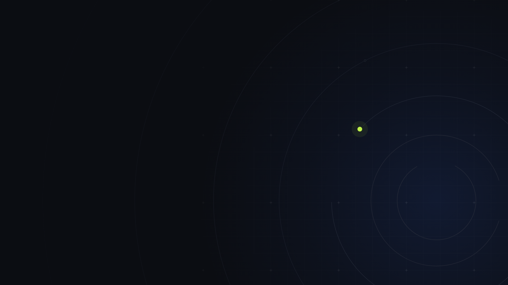
Sistemas que captan clientesMás clientes. No más likes.
fondo-01Órbita · oscuro · 16:9
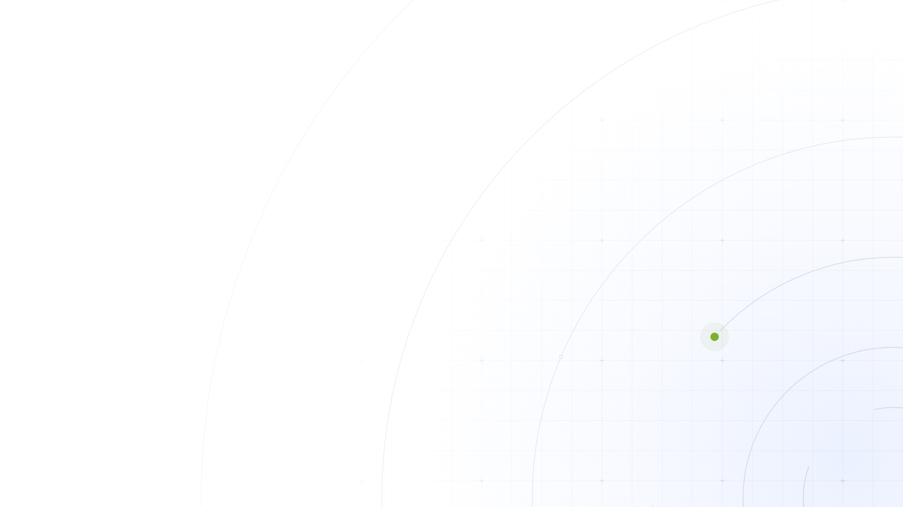
Método OryzzUn sistema de captación, no acciones sueltas.
fondo-02Órbita · claro · 16:9
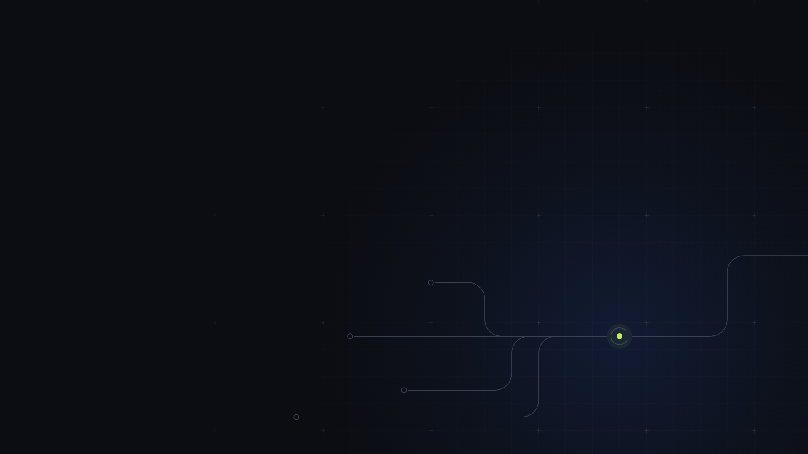
DiagnósticoNo es que no te vean. Es que no te contactan.
fondo-03Rutas · oscuro · 16:9
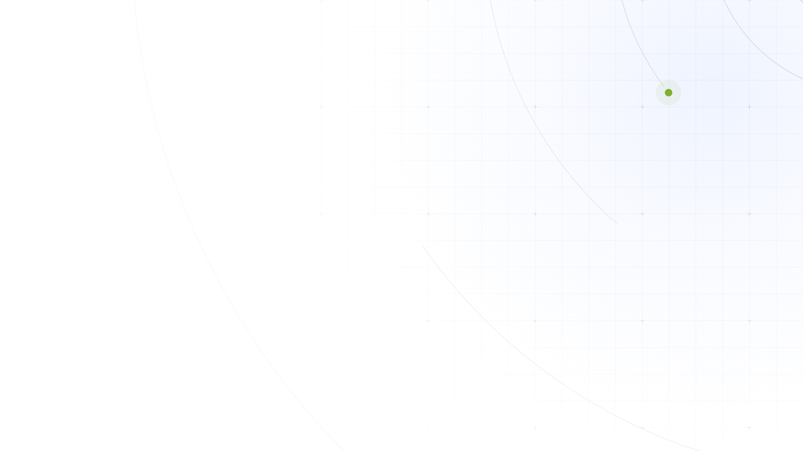
Valoración gratuita30 minutos.
fondo-04Retícula · claro · 16:9
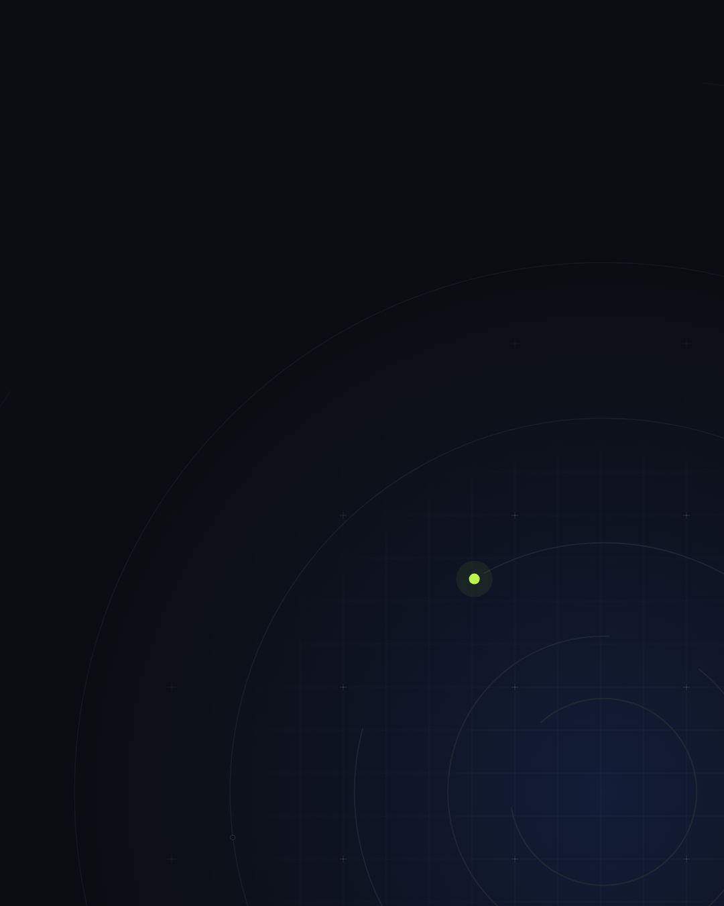
Captación con IATe traemos clientes, no likes.
fondo-05Órbita · oscuro · 4:5
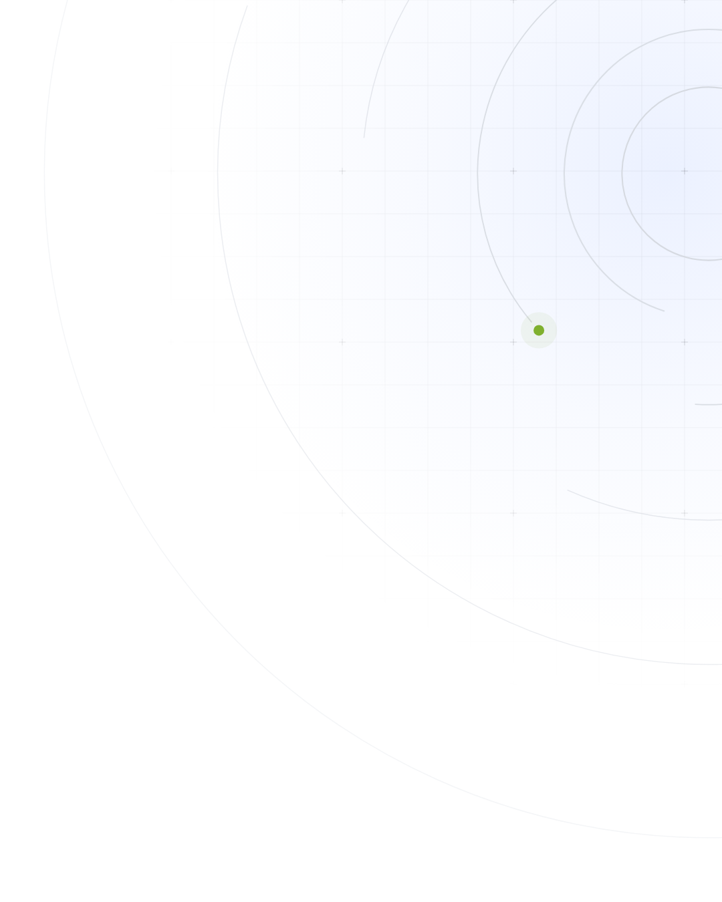
Oryzz TapTu negocio. A un toque.
fondo-06Órbita · claro · 4:5
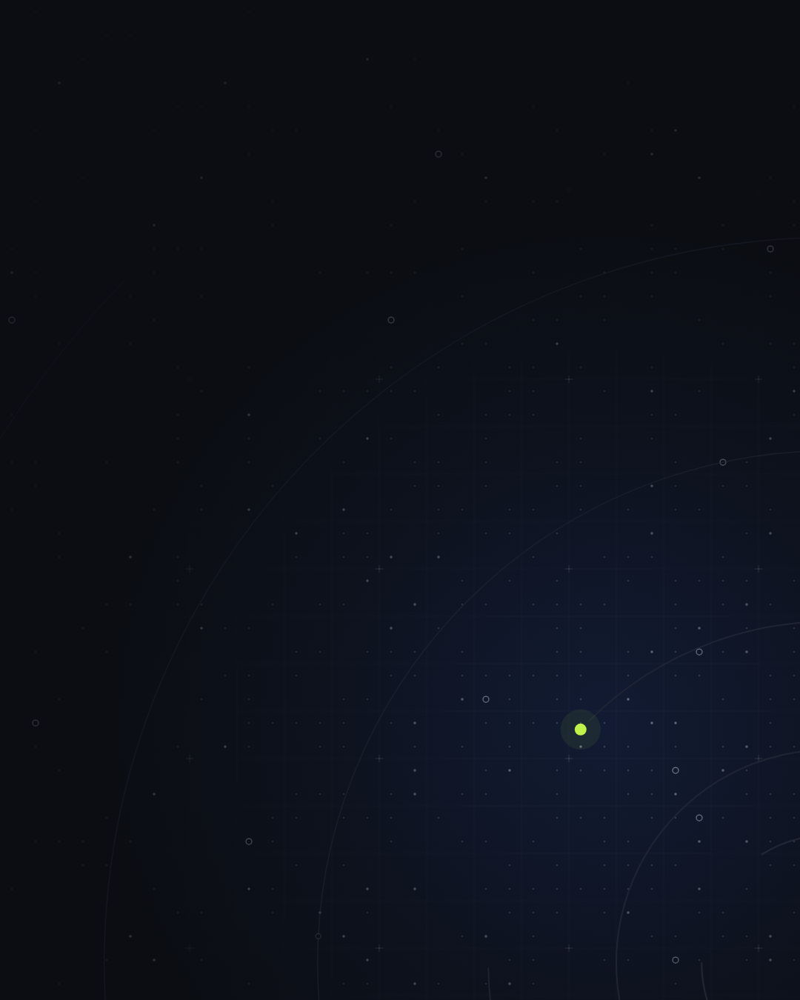
Prueba inicialValidamos con datos antes de que gastes.
fondo-07Nodos · oscuro · 4:5
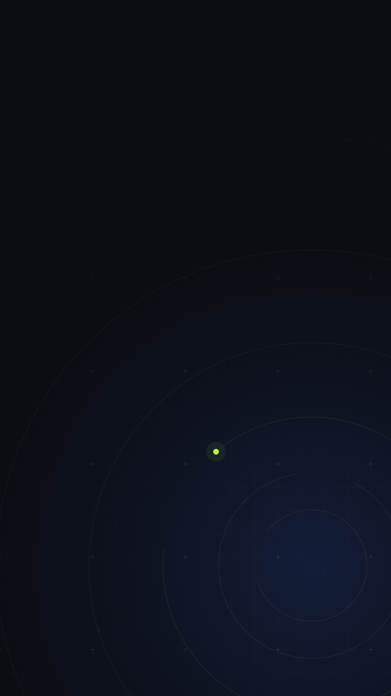
OryzzMás clientes. No más likes.
fondo-08Órbita · oscuro · 9:16
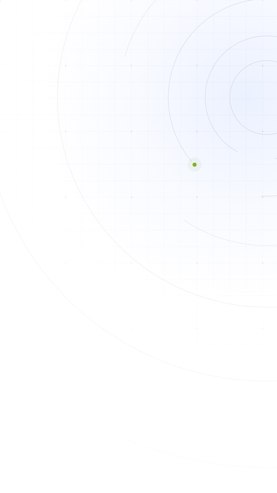
Oryzz TapAcerca el teléfono y ocurre.
fondo-09Órbita · claro · 9:16
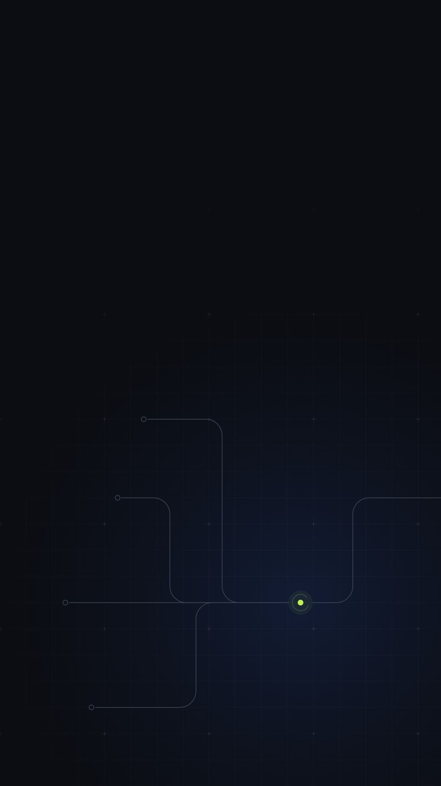
Valoración 30 minSi no encajamos, te lo decimos.
fondo-10Rutas · oscuro · 9:16
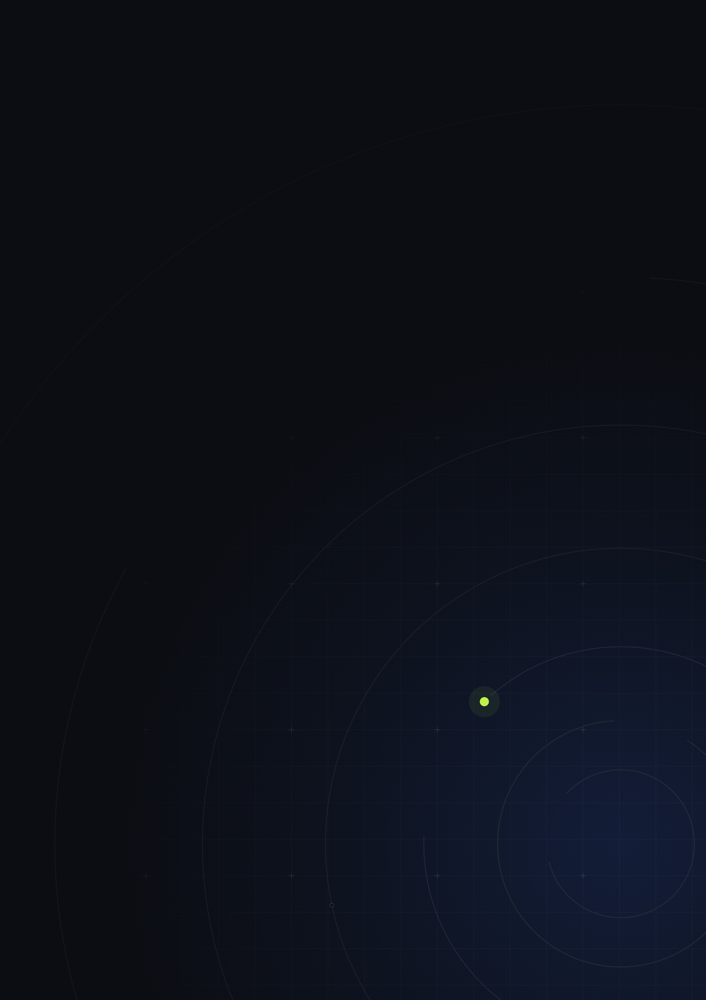
Documento · 2026Propuesta de captación
fondo-11Órbita · oscuro · A4
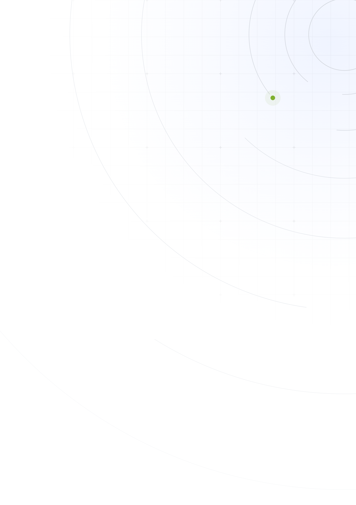
Clínica dental · EjemploInforme mensual
fondo-12Órbita · claro · A4
La línea discontinua marca la zona de texto y no se exporta con el fondo.